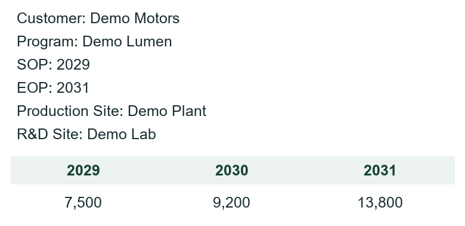

팀 계정으로 로그인하기
- Demand Console 로그인 화면을 엽니다. 파일럿 기간에는 허용된 네트워크에서 접속하세요. 팀 전체 개통 안내를 받으면 외부 네트워크에서도 같은 주소를 사용합니다.
- 팀 내부에서 전달받은 공용 ID를 Username에, 비밀번호를 Password에 입력하고 Sign in을 누릅니다.
- Executive dashboard가 열리면 로그인된 상태입니다. 사용을 마치면 상단의 Sign out · 계정명을 누릅니다.
공용 계정으로 저장한 변경 이력에는 팀 계정명이 표시됩니다. 개인별 변경 기록이 필요한 작업은 개인 계정으로 진행하세요.
데이터 입력
캡처나 사양별 Excel 원본을 받았다면 캡처·Excel 자료 등록부터 시작하세요. 이미 등록된 과제의 발주·출하 수량을 갱신하려면 기존 과제의 물량 입력으로 이동하세요. 입력에는 담당 범위의 Editor 또는 Admin 권한이 필요합니다. Viewer는 허용된 자료를 조회할 수 있습니다.
캡처·Excel 자료 등록과 연도별 물량 조회
아래 예시는 가상 OEM Demo Motors의 과제 Demo Lumen입니다. 이미지는 과제 전체 물량, Excel은 사양별 물량을 담고 있습니다. 실습할 때는 두 파일 중 하나를 선택하세요.
- 파일 선택. 콘솔 상단의 Program sources를 열고 Screenshot or volume worksheet에서 PNG·JPEG 또는 XLSX 파일 하나를 고릅니다. 파일당 최대 4 MiB입니다. 이미지에서는 영문 항목과 연도 행·수량 행 한 쌍이 잘 보이도록 표 하나만 잘라주세요. Excel에서는 Description, Variant SOP, 연도 열을 사용하며 시트명이 기본 과제명이 됩니다.
- 인식 결과 확인. Read and review를 누른 뒤 Review program source에서 OEM, Program, 생산·R&D 거점, 연도와 수량을 원본과 대조하고 잘못 읽은 값을 고칩니다. 예시 Excel에는 OEM 열이 없으므로 OEM as printed에 Demo Motors를 입력합니다. 수량을 고칠 때는 13800처럼 쉼표 없이 원수치(×1)를 쓰고, 물리 단위가 불명확하면 Confirmed quantity unit을 비워 둡니다.
- 조회 범위 선택 후 저장. Existing project에서 이 자료를 볼 팀원에게 허용된 과제를 고릅니다. 실습 파일은 실습용 과제에 연결하세요. OEM 전체 공유가 필요할 때만 Entire OEM을 대신 선택합니다. Confirm and save를 누르면 저장됩니다. 관리자가 두 범위를 모두 비우면 관리자 검토함에 보관됩니다.
- 연도별 물량 조회. Program sources로 돌아가 연결한 OEM 아래의 과제명을 클릭합니다. 예시를 같은 이름의 실습 과제에 연결했다면 Demo Motors → Demo Lumen입니다. 물량표 참고 연도가 적용된 화면에서 SOP year는 첫 연도, EoL year는 마지막 연도입니다. Annual quantities에서 연도별 수량을 확인하세요. Excel 자료는 사양별 SOP와 수량이 각 행에 표시됩니다. 이 원자료는 대시보드 수요·발주 KPI에 자동 합산되지 않습니다.
OCR 자동 입력은 어떻게 동작하나요?
Read and review를 누르면 콘솔 서버의 영문 OCR(Tesseract)이 캡처 속 글자를 읽어 검토 양식을 채웁니다. Confirm and save를 눌러야 과제 자료로 저장됩니다. Excel은 시트의 셀 값을 직접 읽습니다.
- 캡처를 준비합니다. 4 MiB 이하, 800만 화소 이하의 PNG 또는 JPEG를 사용하세요. 과제 정보 아래에 연도 한 줄과 수량 한 줄이 보이도록 자릅니다. 한 이미지에서 첫 번째 연도 표를 읽으므로 과제가 여럿이면 따로 올리세요.
- 영문 항목명을 기준으로 값을 채웁니다. 각 항목을 한 줄에 적고 이름 뒤에 콜론을 붙입니다. 예를 들어
Customer: Demo Motors는 OEM,Program: Demo Lumen은 과제명으로 들어갑니다. 같은 방식으로SOP,EOP,Production Site,R&D Site를 읽습니다. 물량표 기준 화면의 SOP/EoL 참고 연도는 검토한 연도 열에서 정해집니다. - 연도와 수량을 왼쪽부터 짝짓습니다. 연도 행이
2029 2030 2031이고 바로 아래 행이7,500 9,200 13,800이면 2030년 수량은 9,200입니다. 0은 실제 0으로, 대시(—)는 미확인으로 읽습니다. 단위가 원본에 없으면 Confirmed quantity unit은 비워 두세요. - 원본과 대조하고 고칩니다. 연도와 수량의 칸 수가 다르면 경고와 함께 해당 행의 수량이 모두 빈칸으로 표시됩니다. 연도 행 자체를 찾지 못하면 연도부터 직접 입력하세요. 경고가 없어도 숫자가 잘못 읽힐 수 있습니다. 아래 예시처럼 Annual quantities (CSV)의 첫 줄은 유지하고, 각 연도의 수량은 천 단위 쉼표 없이 고칩니다.
variant,variant_sop,year,quantity
,,2029,7500
,,2030,9200
,,2031,13800앞의 두 칸은 사양명과 사양별 SOP입니다. 이 캡처는 과제 전체 수량이므로 비워 둡니다. 2030년 수량을 확인할 수 없다면 ,,2030,으로 남기세요.
저장 후 확인. Existing project에서 연결할 과제를 확인하고 Confirm and save를 누릅니다. Program sources → 해당 OEM → 과제명 → Annual quantities에서 저장값을 확인하세요. 검토 화면이 열린 뒤 15분이 지나 만료됐다는 메시지가 나오면 파일을 다시 올려 검토를 시작합니다.
Excel 자동 입력은 어떻게 동작하나요?
- 읽을 시트를 준비합니다. 예시 파일에서 Demo Lumen 시트를 여세요. 시트명이 기본 과제명이 됩니다. 통합 문서에는 다음 열 구조의 시트가 하나 있어야 합니다.
- 사양과 연도 열을 확인합니다. A열 Description은 사양명, B열 Variant SOP는 그 사양의 양산 시작일입니다. C열부터는 2029, 2030, 2031처럼 네 자리 연도를 열 제목으로 쓰고 그 아래에 해당 연도의 물량을 입력합니다. 사양별 물량은 수식 대신 정수 값으로 입력하세요. Total과 Grand Total 행은 가져오기에서 제외됩니다.
- 사양 한 행을 원본과 대조합니다. Program sources에서 파일을 선택한 뒤 Read and review를 누릅니다. 예를 들어 Excel의 Plus 행은 검토 화면에서 연도별 세 줄로 펼쳐집니다. 세 줄 모두 사양 SOP는 2030-01-01이고, 수량은 순서대로 빈칸, 0, 3400이어야 합니다. 원본의 대시나 빈칸은 미확인으로 유지됩니다.
- 저장하고 조회합니다. 예시에는 OEM 열이 없으므로 OEM as printed에 Demo Motors를 입력하고 Existing project에서 해당 실습 과제를 선택합니다. Confirm and save를 누른 뒤 Program sources → Demo Motors → Demo Lumen을 엽니다.
저장 후 화면. Annual quantities에서 사양마다 한 행이 표시됩니다. Plus 행을 가로로 읽으면 2029년은 미확인(—), 2030년은 실제 0, 2031년은 3,400입니다. 물량표 기준 화면에서 과제 전체의 참고 연도는 2029~2031입니다. 사양별 SOP는 Excel의 Variant SOP 값을 그대로 표시합니다.
| Variant | Variant SOP | 2029 | 2030 | 2031 |
|---|---|---|---|---|
| Standard | 2029-01-01 | 7,500 | 9,200 | 10,400 |
| Plus | 2030-01-01 | — | 0 | 3,400 |
가상 캡처 예시와 OCR 확인값


새 과제를 처음 등록할 때
- Masters에서 관리자가 OEM, Tier1, 칩 제품·품번을 확인하고 누락된 항목을 등록합니다.
- Executive dashboard → New project에서 간소화된 등록 화면에서 OEM, 고유 과제 코드, 차종·플랫폼을 입력하고 Save를 누릅니다. Editor는 새 과제를 만들 OEM에 대한 권한이 필요합니다.
- 과제 상세의 Add opportunity에서 경쟁하는 Tier1마다 기회를 한 건씩 저장합니다. 담당자, 영업 단계, 수주 확률과 업데이트일을 각각 입력합니다.
- Add plan에서 과제·연도당 한 번만 OEM 차량 생산량, 시스템 적용률, 차량당 모듈 수, 가정·출처·기준일을 저장합니다. 기준 공급안이 정해지지 않았다면 Not selected를 유지합니다.
- Add supply에서 해당 연도 계획과 Tier1 기회를 연결하고 점유율(%)을 입력합니다. 채택한 공급안에만 Selected를 표시합니다. 단독 수주는 한 업체, 분할 공급은 선택한 점유율 합계 100% 이하입니다.
- Add fit에서 연도별 공급 항목, 칩 품번, 모듈당 칩 수를 저장합니다. 다음 연도나 다른 품번은 해당 조합을 따로 등록합니다.
기존 과제의 물량 입력
한 건은 과제 상세의 Add volume에서 연도·Tier1·품번에 해당하는 항목을 고르고 유형, 수량, 단위, 가정, 출처, 기준일을 입력한 뒤 Save를 누릅니다. 이미 등록된 건은 Reported annual volumes → Edit에서 수정합니다. OEM 차량 생산량은 Assumptions & evidence의 해당 연도에서 Edit plan으로 수정합니다.
같은 품번의 여러 연도는 Edit annual quantities를 펼쳐 입력합니다. Tier1 / part, Volume type, Unit을 선택하고 Source, As of, Assumptions를 채웁니다. 바꿀 연도만 입력한 뒤 Preview annual changes → Commit reviewed rows 순서로 저장합니다. 이 화면에서 빈 연도는 건너뛰고, Unknown은 미확인 수량, 0은 실제 0건을 뜻합니다.
Excel·CSV로 여러 건 입력
- 상단 Volume entry에서 Excel template 또는 CSV template을 받습니다. 열 이름과 순서는 유지합니다.
- 한 줄에 한 과제·연도의 물량을 입력합니다. OEM Production Plan은 기존 연도 계획에 vehicle 단위를 쓰고 tier1과 part를 비웁니다. 공급사 물량은 등록된 Tier1 이름과 칩 품번을 사용합니다.
- 파일을 선택하거나 CSV를 붙여 넣고 Preview rows를 누릅니다. 표시된 행 번호의 오류를 수정하세요. 기존 값을 교체할 때만 Replace existing matching records를 선택한 뒤 Commit reviewed rows를 누릅니다.
- 저장된 행 수를 확인하고 과제 상세의 Annual trend 또는 Reported annual volumes에서 해당 연도·유형·단위를 대조합니다.
CSV 작성 예시 보기
가상 과제의 2028년 차량 계획과 칩 발주 예시입니다. 과제 코드, 공급사, 품번은 입력하려는 과제에 등록된 값으로 바꾸세요. CSV에서 수량을 비운 행은 미확인 값으로 처리됩니다.
project,year,tier1,part,kind,quantity,unit,assumptions,source,as_of
DEMO-ADAS,2028,,,OEM Production Plan,10000,vehicle,Annual plan,Demo plan,2026-11-19
DEMO-ADAS,2028,Demo Tier1,DEMO-A1,Confirmed PO,6000,pcs,First order,Demo PO,2026-11-19담당 OEM의 과제 찾기
Executive dashboard에서 From과 Through에 시작·종료 연도를 입력하고 OEM을 선택한 뒤 Apply를 누릅니다. 과제 코드, 차종, 소켓 또는 칩 품번을 알면 Project search로 범위를 좁힐 수 있습니다.
Projects 목록에서 과제 코드와 소켓을 확인한 뒤 링크를 엽니다. 같은 차종이라도 소켓이 다르면 별도 과제입니다. 필터를 지우고 다시 찾으려면 Reset을 누르세요.
같은 소켓의 Tier1 제안 비교하기
- 대시보드의 Compare in matrix를 눌러 선택한 필터를 유지합니다.
- Metric에서 지표를 고릅니다. 예를 들어 칩 기준 고객 예측치를 보려면 Tier1 Forecast와 Ledger unit → pcs를 선택하고 Apply를 누릅니다.
- 표 왼쪽의 삼각형으로 OEM과 프로젝트를 펼칩니다. 같은 연도 열에서 Tier1 행의 공급 점유율과 Part 행의 품번별 수량을 대조합니다. 업체 이름 옆에는 영업 단계와 수주 확률이 표시됩니다.
경쟁 제안 예시 세 Tier1이 같은 소켓에 각각 100만 pcs를 제안해도 세 수치는 비교 대상입니다. OEM 생산량은 공통 차량 계획에서, 확정 발주는 기록된 Confirmed PO에서 확인하세요.
생산계획·예상 수요·발주 구분하기
- OEM Production Plan
- 프로젝트의 연간 차량 생산계획입니다. 단위는 vehicle입니다.
- Expected demand
- 선택한 공급 시나리오의 예상 칩 수요입니다. 차량 생산량 × 시스템 적용률 × Tier1 점유율 × 차량당 모듈 수 × 모듈당 칩 수로 계산합니다.
- Probability weighted
- 각 기회의 예상 칩 수요에 해당 수주 확률을 곱한 추정치입니다. 예를 들어 예상 수요 10만 pcs에 수주 확률 60%면 확률가중 수요는 6만 pcs입니다.
- Confirmed PO / Actual shipments
- 각각 기록된 확정 발주와 실제 출하입니다. 예측·발주·출하는 별도로 읽고, 차량(vehicle)·모듈(module)·칩(pcs)은 같은 단위끼리 비교합니다.
Baseline에서 기준 시나리오를 확인하세요. Not selected는 기준이 아직 정해지지 않았다는 뜻입니다. —는 값이나 계산 조건이 부족하다는 표시이며, 입력된 수량 0과 구분합니다.
숫자의 근거 확인하기
과제 상세의 Competing suppliers에서 단계·확률·최근 업데이트일을, Annual trend에서 연도별 추이를 확인합니다. Assumptions & evidence에서 해당 연도를 펼치면 계산 가정·출처·기준일과 채택된 공급안을 볼 수 있습니다. 변경 전후 값은 Change history에서 확인하세요.
현재 필터의 결과를 파일로 받으려면
대시보드 또는 매트릭스에서 기간과 필터를 적용한 뒤 Export CSV 또는 Export Excel을 누릅니다. 내보내기 권한이 있는 계정에만 버튼이 표시됩니다.
접속·권한 문제 해결하기
가이드는 열리는데 로그인 화면이 열리지 않아요.
팀 전체 개통 안내 전이라면 현재 네트워크의 파일럿 접속 가능 여부를 확인하세요. 개통 안내를 받은 뒤에도 열리지 않으면 접속 시각과 화면에 표시된 오류를 팀 담당자에게 알려주세요.
비밀번호가 맞지 않거나 과제가 보이지 않아요.
로그인이 거절되면 반복 입력을 멈추고 팀 담당자에게 최신 공용 로그인 정보를 내부 채널로 확인하세요. 로그인 후 목록이 비었다면 먼저 Reset으로 필터를 지웁니다. 계속 비어 있거나 과제 링크에서 404가 나오면 담당자에게 계정의 OEM·과제 조회 범위를 확인해 달라고 요청하세요.